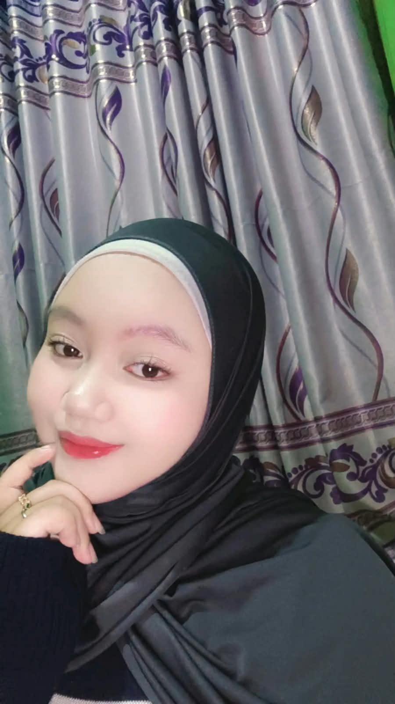

Komputer & Office
Penguasaan dalam ms. office untuk membantu pekerjaan dan tugas administrasi.
PROFIL PRIBADI
Aku tertarik mempelajari teknologi, pengolahan data, dan bagaimana sistem informasi dapat membantu pekerjaan menjadi lebih mudah dan teratur.
Terus belajar, berkembang, dan mencoba hal baru.

TENTANG SAYA
Beberapa hal tentang diriku dan bidang yang sedang kupelajari.
Perkenalkan, aku Anggita Ghiseila Rahmawati, aku lulusan dari smkn 2 karawang jurusan manajemen perkantoran, saat ini aku mahasiswa Sistem Informasi di stmik rosma. Aku sedang mengembangkan pengetahuan di bidang teknologi informasi, administrasi, dan pengolahan data. Bagiku, proses belajar adalah kesempatan untuk meningkatkan kemampuan, melatih ketelitian, dan mendapatkan pengalaman baru.
KEAHLIAN
Keahlian yang aku miliki dan terus latih melalui kuliah maupun pengalaman.
Penguasaan dalam ms. office untuk membantu pekerjaan dan tugas administrasi.
Memasukkan, merapikan, dan memeriksa data dengan teliti.
Membantu menyiapkan dokumen dan menyusun informasi secara teratur.
Mempelajari cara membangun dan mengatur tampilan website sederhana.
PENDIDIKAN
Pendidikan dasar
[2013–2019]
Pendidikan menengah pertama
[2019 – 2022]
Pendidikan menengah kejuruan
Jurusan Manajemen Perkantoran
[2022 - 2025]Saat ini
STMIK ROSMA
[2025 - sekarang]PENGALAMAN
Pengalaman yang membantuku mengasah kemampuan dan menambah wawasan.
Selama PKL di bagian marketing & QA/QC, di bagian marketing aku membantu membuat invoice customer dan menginput data faktur pajak, dibagian QA/QC aku input datac Lab QC dan filling document. Pengalaman ini melatih ketelitian, kerapian dalam mengelola dokumen, serta tanggung jawab dalam menyelesaikan pekerjaan.
Membuat website profil menggunakan HTML semantik dan CSS, mengatur tampilan untuk desktop dan ponsel, serta belajar memublikasikan website secara online.
KONTAK
Terima kasih sudah mengunjungi website profilku. Kamu bisa menghubungiku melalui kontak yang akan aku lengkapi di bawah ini.